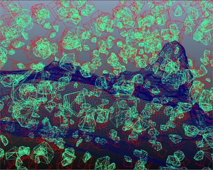
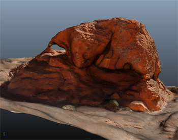
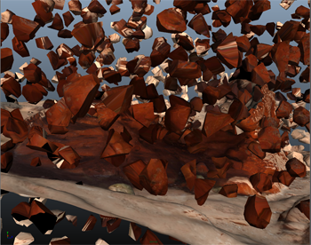

以下工作流显示了如何将 Bullet 解算器导出到 Alembic 缓存文件，以便导入到另一个带纹理的场景版本来节省时间。您可以在 Maya 中使用 Alembic 缓存，以在产品级流水线的各个阶段之间传递 Bullet 模拟。Alembic 缓存文件的内容作为 Maya 几何体进行求值，并且可以使用多边形、NURBS 和细分曲面编辑工具进行修改。
有关 Alembic 缓存系统工作方式的详细信息，请参见关于 Alembic 缓存。
此工作方式非常适合将由其他团队（如照明或摄影艺术家）开发的场景，在这些场景中，您可以为他们提供轻量版本的模拟，使他们可以在最终渲染之前添加其元素。
此工作流分为两个部分：
- 将模拟导出到缓存文件
- 导入缓存文件
注：
- 如果场景有一个名称空间，则在与渲染场景合并之前，必须将该名称空间移除。使用“窗口”(Window) >“常规”(General) > “名称空间编辑器”(Namespace Editor) 以在导出前移除该名称空间。
- 您可以使用 VP2.0 屏幕外生成播放预览，从而可以从命令行使用 mayabatch 生成播放预览。
- 如果材质是黑色的，则回放场景以更新材质。
- 创建刚体集时，可以在“创建刚体集”(Create Rigid Set)选项中使用输出网格创建（以便可视化模拟结果），也可以让 Viewport 2.0 渲染该刚体集（已解算状态节点中的“可见性”(Visibility)选项），但无需两种方法都使用。如果您使用的是旧版视口，可以使用“创建刚体集”(Create Rigid Set)选项中的“输出网格”(Output Mesh)设置进行创建，如果使用的是 Viewport 2.0，则无需如此。
- 在创建 Bullet 刚体集之前冻结缩放。缩放变换值未正确传递到生成的已解算对象。
您可以选择导出刚体集、附加了单个刚体的对象或者场景中的任何内容。对于该示例，我们会导出刚体集（山脉顶部），因此我们选择“将当前选择导出到 Alembic”(Export selection to Alembic)。
单击播放器控件中的 CC 按钮以启用/禁用以下视频的字幕：
将模拟导出到缓存文件
在工作流的这一部分中，我们首先使用通过 Viewport 2.0 设置的岩面场景的线框版本，其中包括山脉底部的网格和山脉顶部的断裂刚体集。我们将创建刚体模拟层次的 Alembic 缓存文件，该文件可发送给负责添加照明和摄影机的第二个团队。使用 Alembic 工作流，就不用模拟和驱动实际对象，从而可以节约时间。
若要将解算输出到 Alembic 缓存文件，请执行以下操作：
- 若要设置场景以便导出，请禁用已解算状态节点中的“可见性”(Visibility)选项，并将场景切换到“线框”(Wireframe)模式。可以在“Bullet 解算形状”(Bullet Solved Shape)节点中启用“边界框”(Bounding Box)，以进行非常基本的解算器显示。
- 按“播放”(Play)查看模拟。调整物理设置（如有必要）。一旦模拟准备就绪，我们必须将动画传递到具有材质和纹理的原始几何体。
- 选择刚体集或网格对象。
- 选择“Bullet > 将当前选择导出到 Alembic”(Bullet > Export Selection to Alembic)。有两个选项：“将当前选择导出到 Alembic”(Export Selection to Alembic)（仅过滤 Bullet 刚体对象）和“将所有内容导出到 Alembic”(Export All to Alembic)。在此工作流程中，选择“将当前选择导出到 Alembic”(Export Selection to Alembic)将包括刚体集和所有刚体形状。
- 将打开“导出当前选择”(Export Selection)窗口。您可以选择使用时间滑块、设置开始和结束帧或其他时间范围。
- 向下滚动以启用“去除名称空间”(Strip Namespace)选项。如果场景有一个名称空间，则在与渲染场景合并时，必须将该名称空间移除。
- 选择“HDF5”作为文件格式。 注： 不提供对 Ogawa 文件格式的 Bullet 支持。
- 输入导出文件的名称，然后单击“导出选定对象”(Export Selected)。模拟将在导出时运行。 注： 为了更快地进行解算，可以批量运行解算。请参见批渲染静止图像或动画。
注： 当前，Bullet Alembic 导出不支持几何图形已应用缩放的工作流。移除对象任何缩放和/或局部枢轴后，再将 Bullet 解算器附加到对象。
导入缓存文件
在工作流的这一部分中，照明和摄影机团队接收导出的 Alembic 缓存文件，并将其与具有灯光和摄影机的场景版本合并在一起。第二个团队的场景中包含与创建该解析的团队相同的层次，但没有动画。
若要将 Alembic 缓存导入渲染文件，请执行以下操作：
- 我们加载具有相同层次的静态场景，但这次我们加载具有纹理、材质、灯光和摄影机的静态场景。 注： 渲染场景层次没有名称空间。文件上存在名称空间时，如果希望将其绑定到导入的缓存文件，则需要事先移除该名称空间，因为 Alembic 不支持将 abc 文件导入现有的名称空间。
- 选择“缓存 > Alembic 缓存 > 导入 Alembic”(Cache > Import Alembic > Import Alembic) >
 。
。 - 在“Alembic 导入”(Alembic Import)窗口中，选择“在当前选择下导入”(Import Under Current Selection)和“合并”(Merge)。这会在 .abc 文件中应用动画并将其与新层次中的匹配对象进行连接。
- 单击“导入”(Import)。单击“播放”(Play)可在渲染场景中查看解算。 注： 拥有场景后，您可以将其提交以进行渲染或生成播放预览。